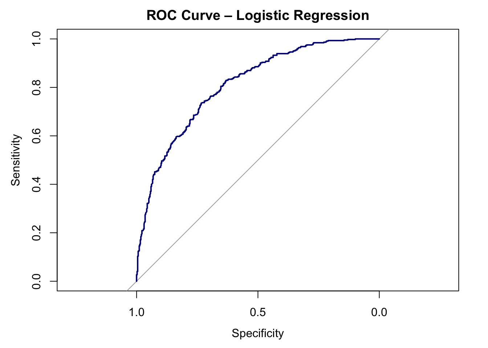
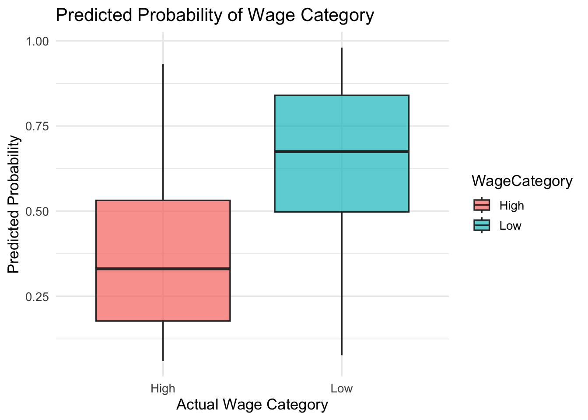

library(ISLR)
library(tidyverse)
library(ggthemes)
library(skimr)
library(caret)
library(pROC)
library(mosaic)
library(pscl)
library(car)
library(supernova)
library(lsr)
library(caTools)
library(knitr)Assignment 7 - Wage Analytics
Introduction
The Wage Analytics Division (WAD) has hired me as their new Data Scientist. My assignment is to determine whether demographic and employment characteristics can be used to predict whether a worker earns a high or low wage.
Using the Wage dataset from the ISLR package, I will create a binary wage category, explore statistical relationships between variables, and build a logistic regression model capable of predicting wage level using demographic, job, and health-related information.
My analysis will help the company understand which characteristics are associated with higher earnings and evaluate how well a predictive model performs on unseen data.
Step 1 – Create the WageCategory Variable
data(Wage)Wage %>% head(n=5) %>% kable()| year | age | maritl | race | education | region | jobclass | health | health_ins | logwage | wage | |
|---|---|---|---|---|---|---|---|---|---|---|---|
| 231655 | 2006 | 18 | 1. Never Married | 1. White | 1. < HS Grad | 2. Middle Atlantic | 1. Industrial | 1. <=Good | 2. No | 4.318063 | 75.04315 |
| 86582 | 2004 | 24 | 1. Never Married | 1. White | 4. College Grad | 2. Middle Atlantic | 2. Information | 2. >=Very Good | 2. No | 4.255273 | 70.47602 |
| 161300 | 2003 | 45 | 2. Married | 1. White | 3. Some College | 2. Middle Atlantic | 1. Industrial | 1. <=Good | 1. Yes | 4.875061 | 130.98218 |
| 155159 | 2003 | 43 | 2. Married | 3. Asian | 4. College Grad | 2. Middle Atlantic | 2. Information | 2. >=Very Good | 1. Yes | 5.041393 | 154.68529 |
| 11443 | 2005 | 50 | 4. Divorced | 1. White | 2. HS Grad | 2. Middle Atlantic | 2. Information | 1. <=Good | 1. Yes | 4.318063 | 75.04315 |
median_wage<- median(Wage$wage)
Wage <- Wage %>% mutate(
WageCategory = case_when(
wage > median_wage ~ "High",
wage <= median_wage ~ "Low"),
WageCategory = as.factor(WageCategory)
)Wage %>% head(n=5) %>% kable()| year | age | maritl | race | education | region | jobclass | health | health_ins | logwage | wage | WageCategory | |
|---|---|---|---|---|---|---|---|---|---|---|---|---|
| 231655 | 2006 | 18 | 1. Never Married | 1. White | 1. < HS Grad | 2. Middle Atlantic | 1. Industrial | 1. <=Good | 2. No | 4.318063 | 75.04315 | Low |
| 86582 | 2004 | 24 | 1. Never Married | 1. White | 4. College Grad | 2. Middle Atlantic | 2. Information | 2. >=Very Good | 2. No | 4.255273 | 70.47602 | Low |
| 161300 | 2003 | 45 | 2. Married | 1. White | 3. Some College | 2. Middle Atlantic | 1. Industrial | 1. <=Good | 1. Yes | 4.875061 | 130.98218 | High |
| 155159 | 2003 | 43 | 2. Married | 3. Asian | 4. College Grad | 2. Middle Atlantic | 2. Information | 2. >=Very Good | 1. Yes | 5.041393 | 154.68529 | High |
| 11443 | 2005 | 50 | 4. Divorced | 1. White | 2. HS Grad | 2. Middle Atlantic | 2. Information | 1. <=Good | 1. Yes | 4.318063 | 75.04315 | Low |
Step 2 – Data Cleaning
colnames(Wage) [1] "year" "age" "maritl" "race" "education"
[6] "region" "jobclass" "health" "health_ins" "logwage"
[11] "wage" "WageCategory"Wage <- Wage %>%
mutate(
across(
c("maritl", "race", "education", "region", "jobclass", "health", "health_ins"),
~substring(.x, 4)
)
)Wage %>% head(n=5) %>% kable()| year | age | maritl | race | education | region | jobclass | health | health_ins | logwage | wage | WageCategory | |
|---|---|---|---|---|---|---|---|---|---|---|---|---|
| 231655 | 2006 | 18 | Never Married | White | < HS Grad | Middle Atlantic | Industrial | <=Good | No | 4.318063 | 75.04315 | Low |
| 86582 | 2004 | 24 | Never Married | White | College Grad | Middle Atlantic | Information | >=Very Good | No | 4.255273 | 70.47602 | Low |
| 161300 | 2003 | 45 | Married | White | Some College | Middle Atlantic | Industrial | <=Good | Yes | 4.875061 | 130.98218 | High |
| 155159 | 2003 | 43 | Married | Asian | College Grad | Middle Atlantic | Information | >=Very Good | Yes | 5.041393 | 154.68529 | High |
| 11443 | 2005 | 50 | Divorced | White | HS Grad | Middle Atlantic | Information | <=Good | Yes | 4.318063 | 75.04315 | Low |
Step 3 – Classical Statistical Tests
A) T-Test
t.test(age ~ WageCategory, data = Wage)
Welch Two Sample t-test
data: age by WageCategory
t = 10.888, df = 2855, p-value < 2.2e-16
alternative hypothesis: true difference in means between group High and group Low is not equal to 0
95 percent confidence interval:
3.681416 5.298535
sample estimates:
mean in group High mean in group Low
44.68510 40.19512 Mean age for high earners: 45 years old
Mean age for low earners: 40 years old
t-statistic: 10.9
df: 2855
p-value < 2.2e-16
Age seems to differ between high earners and low earners. We have a high t-statistic and a very small p-value, suggesting that we are very confident in a large difference between the ages in both wage categories.
B) ANOVA
favstats(wage ~ education, data = Wage) %>% arrange(desc(mean)) %>% kable()| education | min | Q1 | median | Q3 | max | mean | sd | n | missing |
|---|---|---|---|---|---|---|---|---|---|
| Advanced Degree | 38.60591 | 117.14682 | 141.77517 | 171.49763 | 318.3424 | 150.91778 | 53.90421 | 426 | 0 |
| College Grad | 32.36641 | 99.68946 | 118.88436 | 143.13494 | 281.7460 | 124.42791 | 41.18907 | 685 | 0 |
| Some College | 20.08554 | 89.24288 | 104.92151 | 121.38842 | 314.3293 | 107.75557 | 32.47473 | 650 | 0 |
| HS Grad | 23.27470 | 77.94638 | 94.07271 | 109.83399 | 318.3424 | 95.78335 | 28.56756 | 971 | 0 |
| < HS Grad | 20.93438 | 70.26177 | 81.28325 | 97.49329 | 152.2168 | 84.10441 | 21.57805 | 268 | 0 |
anova_model_ed<- aov(wage ~ education, data = Wage)summary(anova_model_ed) Df Sum Sq Mean Sq F value Pr(>F)
education 4 1226364 306591 229.8 <2e-16 ***
Residuals 2995 3995721 1334
---
Signif. codes: 0 '***' 0.001 '**' 0.01 '*' 0.05 '.' 0.1 ' ' 1supernova(anova_model_ed) Analysis of Variance Table (Type III SS)
Model: wage ~ education
SS df MS F PRE p
----- --------------- | ----------- ---- ---------- ------- ----- -----
Model (error reduced) | 1226364.485 4 306591.121 229.806 .2348 .0000
Error (from model) | 3995721.285 2995 1334.131
----- --------------- | ----------- ---- ---------- ------- ----- -----
Total (empty model) | 5222085.770 2999 1741.276 F-statistic: 229.81
df: 2999
p-value < 2e-16
With a very large F-statistic and a very small p-value, we can conclude that the variation in wages between education levels is statistically significant. Also, our PRE tells us that education level accounts for 23% of variance in wages.
C) Chi-Square/Association Test
cont_table<- table(Wage$race, Wage$WageCategory)cont_table %>% kable()| High | Low | |
|---|---|---|
| Asian | 113 | 77 |
| Black | 102 | 191 |
| Other | 9 | 28 |
| White | 1259 | 1221 |
Wage$race<- as.factor(Wage$race)
str(Wage$race) Factor w/ 4 levels "Asian","Black",..: 4 4 4 1 4 4 3 1 2 4 ...associationTest(~ WageCategory + race, data = Wage)
Chi-square test of categorical association
Variables: WageCategory, race
Hypotheses:
null: variables are independent of one another
alternative: some contingency exists between variables
Observed contingency table:
race
WageCategory Asian Black Other White
High 113 102 9 1259
Low 77 191 28 1221
Expected contingency table under the null hypothesis:
race
WageCategory Asian Black Other White
High 93.9 145 18.3 1226
Low 96.1 148 18.7 1254
Test results:
X-squared statistic: 43.814
degrees of freedom: 3
p-value: <.001
Other information:
estimated effect size (Cramer's v): 0.121 χ²: 43.8
df: 3
p-value < 0.001
Cramer’s V: 0.121
When comparing our observed and expected values, we see that White people performed as expected. A slightly higher number of Asian people earned higher wages than expected, and a slightly higher number of Black people earned lower wages than expected. Additionally, those who marked their race as “Other” tended to earn less than expected.
With a large chi-squared value and a small p-value, we can conclude that the relationship between race and wage category is statistically significant. However, with such a small effect size, the relationship is weak and we cannot assume that race itself plays much of a role in determining wage category.
Step 4 – Logistic Regression Model
Predictive Model
set.seed(42)
sample <- sample.split(Wage$WageCategory, SplitRatio = 0.7)
training_data <- subset(Wage, sample == TRUE)
test_data <- subset(Wage, sample == FALSE)Model Specification
train_model <- glm(WageCategory ~ age + maritl + race + education + jobclass + health + health_ins,
family = "binomial", data = training_data)Logistic Regression Output
summary(train_model)
Call:
glm(formula = WageCategory ~ age + maritl + race + education +
jobclass + health + health_ins, family = "binomial", data = training_data)
Coefficients:
Estimate Std. Error z value Pr(>|z|)
(Intercept) 3.969497 0.449412 8.833 < 2e-16 ***
age -0.019159 0.005179 -3.699 0.000216 ***
maritlMarried -0.880983 0.198852 -4.430 9.41e-06 ***
maritlNever Married 0.382638 0.235167 1.627 0.103718
maritlSeparated -0.493750 0.445580 -1.108 0.267815
maritlWidowed -0.702502 0.641162 -1.096 0.273224
raceBlack 0.308966 0.280923 1.100 0.271407
raceOther 0.024598 0.587975 0.042 0.966630
raceWhite -0.163411 0.226615 -0.721 0.470850
educationAdvanced Degree -2.727178 0.262521 -10.388 < 2e-16 ***
educationCollege Grad -1.918224 0.229754 -8.349 < 2e-16 ***
educationHS Grad -0.537104 0.218967 -2.453 0.014171 *
educationSome College -1.253153 0.226653 -5.529 3.22e-08 ***
jobclassInformation -0.239335 0.107600 -2.224 0.026128 *
health>=Very Good -0.305837 0.117671 -2.599 0.009347 **
health_insYes -1.208890 0.118014 -10.244 < 2e-16 ***
---
Signif. codes: 0 '***' 0.001 '**' 0.01 '*' 0.05 '.' 0.1 ' ' 1
(Dispersion parameter for binomial family taken to be 1)
Null deviance: 2910.9 on 2099 degrees of freedom
Residual deviance: 2225.0 on 2084 degrees of freedom
AIC: 2257
Number of Fisher Scoring iterations: 4Odds Ratio
exp(coef(train_model)) (Intercept) age maritlMarried
52.95789941 0.98102322 0.41437526
maritlNever Married maritlSeparated maritlWidowed
1.46614683 0.61033309 0.49534462
raceBlack raceOther raceWhite
1.36201634 1.02490299 0.84924198
educationAdvanced Degree educationCollege Grad educationHS Grad
0.06540362 0.14686760 0.58443835
educationSome College jobclassInformation health>=Very Good
0.28560285 0.78715143 0.73650656
health_insYes
0.29852856 The predictors that matter most in predicting wage category is age, marital status, education, and health insurance status. Specifically, being older, married, having some college experience, a college degree, or an advanced degree, and having health insurance makes someone much less likely to earn a lower wage. Because of the fact that my model considers the positive outcome to be “Low” wage, all of these specific factors have a negative relationship with wage category (meaning they are more likely to earn a higher wage).
Having an advanced degree had the strongest effect on predicting higher wage, followed by having a college degree, then some college experience, then having active health insurance, being married, and finally older age with the smallest (but still statistically significant) effect size.
Health insurance status surprised me the most - not that it is shocking that people with higher wages tend to have health insurance, but it seems like (in my experience) many lower wage jobs still offer some sort of health insurance, If anything, I thought that it would have been a very weak predictor compared to the other variables.
Step 5 – Model Evaluation on Test Data
pR2(train_model)["McFadden"]fitting null model for pseudo-r2 McFadden
0.2356458 This score tells us that our model has a good fit.
varImp(train_model) %>% arrange(desc(Overall)) %>% kable()| Overall | |
|---|---|
| educationAdvanced Degree | 10.3884187 |
| health_insYes | 10.2436506 |
| educationCollege Grad | 8.3490394 |
| educationSome College | 5.5289440 |
| maritlMarried | 4.4303535 |
| age | 3.6994409 |
| health>=Very Good | 2.5990901 |
| educationHS Grad | 2.4529042 |
| jobclassInformation | 2.2243094 |
| maritlNever Married | 1.6270892 |
| maritlSeparated | 1.1081073 |
| raceBlack | 1.0998271 |
| maritlWidowed | 1.0956687 |
| raceWhite | 0.7210960 |
| raceOther | 0.0418351 |
Education (namely College Grad & Advanced Degree) and health insurance are the strongest predictors of having a higher wage.
vif(train_model) %>% kable()| GVIF | Df | GVIF^(1/(2*Df)) | |
|---|---|---|---|
| age | 1.226363 | 1 | 1.107413 |
| maritl | 1.230025 | 4 | 1.026217 |
| race | 1.088403 | 3 | 1.014219 |
| education | 1.171092 | 4 | 1.019938 |
| jobclass | 1.076950 | 1 | 1.037762 |
| health | 1.057935 | 1 | 1.028560 |
| health_ins | 1.020670 | 1 | 1.010282 |
Thankfully, our model shows no colinearity.
Predicted Probabilities & Classes
test_data$pred_prob <- predict(train_model, newdata = test_data, type = "response")
test_data$pred_class <- ifelse(test_data$pred_prob > 0.5, "Low", "High") %>% as.factor()test_data %>% head(n=10) %>% kable()| year | age | maritl | race | education | region | jobclass | health | health_ins | logwage | wage | WageCategory | pred_prob | pred_class | |
|---|---|---|---|---|---|---|---|---|---|---|---|---|---|---|
| 231655 | 2006 | 18 | Never Married | White | < HS Grad | Middle Atlantic | Industrial | <=Good | No | 4.318063 | 75.04315 | Low | 0.9790380 | Low |
| 86582 | 2004 | 24 | Never Married | White | College Grad | Middle Atlantic | Information | >=Very Good | No | 4.255273 | 70.47602 | Low | 0.7799730 | Low |
| 376662 | 2008 | 54 | Married | White | College Grad | Middle Atlantic | Information | >=Very Good | Yes | 4.845098 | 127.11574 | High | 0.1440839 | High |
| 450601 | 2009 | 44 | Married | Other | Some College | Middle Atlantic | Industrial | >=Very Good | Yes | 5.133021 | 169.52854 | High | 0.3780648 | High |
| 305706 | 2007 | 34 | Married | White | HS Grad | Middle Atlantic | Industrial | >=Very Good | No | 4.397940 | 81.28325 | Low | 0.8070183 | Low |
| 160191 | 2003 | 37 | Never Married | Asian | College Grad | Middle Atlantic | Industrial | >=Very Good | No | 4.414973 | 82.67964 | Low | 0.8052107 | Low |
| 230312 | 2006 | 50 | Married | White | Advanced Degree | Middle Atlantic | Information | >=Very Good | No | 5.360552 | 212.84235 | High | 0.2132905 | High |
| 301585 | 2007 | 56 | Married | White | College Grad | Middle Atlantic | Industrial | <=Good | Yes | 4.861026 | 129.15669 | High | 0.2184157 | High |
| 158226 | 2003 | 38 | Married | Asian | College Grad | Middle Atlantic | Information | >=Very Good | No | 5.301030 | 200.54326 | High | 0.4742904 | High |
| 448410 | 2009 | 75 | Married | White | College Grad | Middle Atlantic | Industrial | >=Very Good | Yes | 4.447158 | 85.38394 | Low | 0.1251232 | High |
Confusion Matrix
conf_matrix <- confusionMatrix(test_data$pred_class, test_data$WageCategory, positive = "Low")
conf_matrixConfusion Matrix and Statistics
Reference
Prediction High Low
High 310 116
Low 135 339
Accuracy : 0.7211
95% CI : (0.6906, 0.7502)
No Information Rate : 0.5056
P-Value [Acc > NIR] : <2e-16
Kappa : 0.4419
Mcnemar's Test P-Value : 0.2559
Sensitivity : 0.7451
Specificity : 0.6966
Pos Pred Value : 0.7152
Neg Pred Value : 0.7277
Prevalence : 0.5056
Detection Rate : 0.3767
Detection Prevalence : 0.5267
Balanced Accuracy : 0.7208
'Positive' Class : Low
- Accuracy: 0.72
- The model accurately predicted the correct wage category 72% of the time.
- Sensitivity: 0.75
- The model accurately predicted low wage earners 75% of the time.
- Specificity: 0.70
- The model accurately predicted high earners 70% of the time.
- Balanced Accuracy: 0.72
- Our balanced accuracy shows us that our observed data is likely pretty balanced, since the balanced accuracy rate is the same as our regular accuracy rate. When we run table(Wage$WageCategory), we can see that our data is very balanced (~1500 per category).
ROC Curve
roc_obj <- roc(test_data$WageCategory, test_data$pred_prob, levels = c("Low", "High"))plot(roc_obj, col = "darkblue", lwd = 2,
main = "ROC Curve – Logistic Regression")
Area Under the Curve
auc(roc_obj)Area under the curve: 0.8088ggplot(test_data, aes(x = WageCategory, y = pred_prob, fill = WageCategory)) +
geom_boxplot(alpha = 0.7) +
labs(title = "Predicted Probability of Wage Category",
x = "Actual Wage Category", y = "Predicted Probability") +
theme_minimal(base_size = 13)
Our AUC is 0.81 - this tells us that our model has very strong discriminative power and can accurately separate between high wage and low wages.
The model identifies high earners at a rate of 70%, and it identifies low earners at a rate of 75%. This model performs much better than the ‘No Information Rate’ performance, which is accurate about 51% of the time (0.72 > 0.51). So, this model is definitely better at predicting outcomes than guessing.
ImportantModel Performance
The key question is whether or not the model makes good predictions. With 72% accuracy and an AUC of 0.81, the model performs well on unseen data.
Step 6 – Final Interpretation
Based on all of the performed analyses, multiple variables were found to have a meaningful relationship with wage category. Specifically, a t-test showed a highly significant difference in the mean age of high earners (45 years) versus low earners (40 years). The ANOVA showed that education level is a statistically significant predictor of wages, accounting for 23% of the variance. Further, a chi-squared test indicated a statistically significant but weak association between race and wage category, suggesting that other factors likely play a larger role in determining wage category. The logistic regression model was made to predict wage category (Low vs. High) and identified multiple significant predictors. The summary(train_model) output suggested that age, marital status, education level, and health insurance status were the most impactful variables. Specifically, being older, having a college or advanced degree, being married, and having health insurance were all associated with a lower likelihood of earning a low wage. The strongest predictors of a high wage were having a college or advanced degree and having health insurance, as shown by the variable importance analysis. Evaluating the model’s performance had strong results. The model had an overall accuracy of 72% and a balanced accuracy of 72%, indicating it is effective at predicting wage category for both high and low earners. This model performs significantly better than the “No Information Rate,” which was approximately 51%. The model’s discriminative power was represented by a very high AUC (Area Under the Curve) of 0.81, which suggests the model can accurately distinguish between high and low wage earners 81% of the time. The Confusion Matrix also showed that the model performed slightly better at predicting low wage earners (sensitivity of 75%) than high wage earners (specificity of 70%). If this analysis were to be repeated, I would consider adding several new variables to potentially improve the model’s predictive power. Relevant additions could include a variable of specific job types or titles (instead of a broad jobclass), and location data, as different regions may result in different wages. Given the weak relationship found in the chi-squared test and the low variable importance, I would remove race from the model to make it more parsimonious. Ideally, these additions and removals would help to capture more of the complex factors that influence wage outcomes.